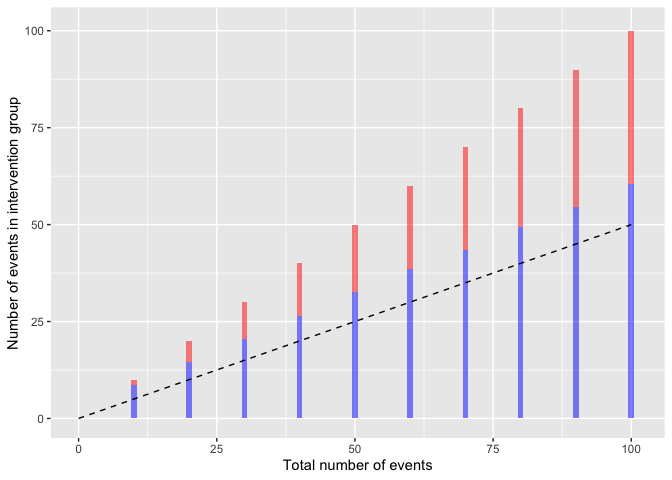
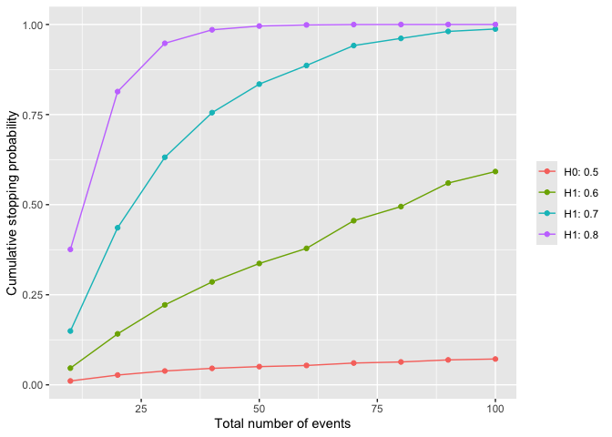

The harmBounds package calculates stopping probabilities, defines stopping boundaries and generates plots for safety monitoring using an event based approach.
Installation
The package can be installed from GitHub:
# install.packages("devtools")
remotes::install_github("dcr-unibe-ch/harmBounds")
# load package
library(harmBounds)Basic usage
Stopping boundaries
hb<-getHarmBound(nevents = seq(10, 100, by = 10), alpha_test = 0.025, pH0 = 0.5, maxevents = 150)
plot(hb)
Operating characteristics
Stopping probabilities and expected number of events can be obtained for alternative scenarios.
hb<-getHarmBound(nevents = seq(10, 100, by = 10), alpha_test = 0.025,
pH0 = 0.5, pH1 = c(0.6, 0.7, 0.8) , maxevents = 150)
plot(hb, which = "cum_stopping")
The above example only scratches the surface of what harmBounds can do. Check the vignette for further examples.